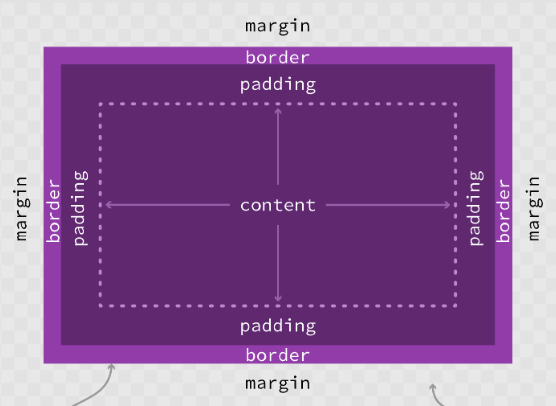

Content
Content is the first layer of the website.
- A box with no content isn't visible. It is the skeletal structure of the website.
Padding
Padding is the outer content.
- Often used to shape the content in the website accordingly.
Border
The border is the space around the perimeter of the box.
- Background colour stops here.
Margin
Margin is the space outside the box.
- It is the space around elements that separates other elements.
